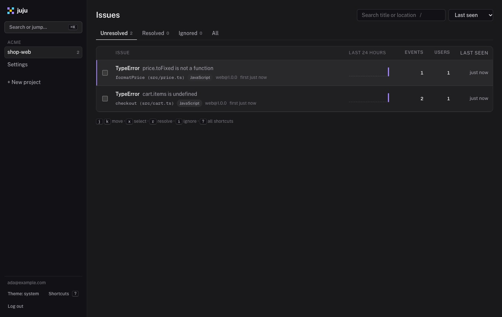

Phases 1 to 5 got errors into juju and made their stack traces readable. Phase 6 is where people work with them: a web dashboard to find, read and resolve issues, and alerts in Slack or email when something new breaks or a fixed bug comes back. It ships inside the same Go binary.
Two issues from three errors. The two "cart.items is undefined" events share a type and a stack, so they're one issue with 2 events.

The look follows fal.ai's product UI: near-black surfaces, hairline borders, a white primary button on dark, small colored chips, a violet accent, and pixel art on the login screen. juju keeps its own name, logo and words.
Many people connecting their first app have never used an error tracker. Others have used Sentry for years and want to move fast. The dashboard serves both without separate modes. The plain path is always visible, and the fast path sits next to it.
The dashboard is a React app built with Vite. make dashboard builds it and copies it into the server, and Go's go:embed compiles those files into the binary, so a deploy is still one file. Page URLs like /p/3/issues/42 get the app, which reads the URL itself. index.html is never cached, so a deploy reaches people right away. Hashed assets are cached forever, because a new build never reuses a name.
SDKs use the public key and scripts use the secret key, but people log in. Passwords are hashed with bcrypt. A session is an HttpOnly, SameSite=Lax cookie, and the server stores only a SHA-256 hash of its token, so a database leak doesn't hand out sessions. Every request that changes something must carry an X-Juju-CSRF header. Another site can make your browser send the cookie, but it can't add a custom header, so this blocks cross-site requests. Repeated failed logins are slowed down. Asking for a project you're not a member of returns "not found", so nobody can probe which projects exist.
flowchart LR E[event] --> W[worker: fingerprint + save] W -- "new issue / resolved → regressed" --> Q[(alert queue)] W --> DB[(Postgres)] Q --> S[Slack webhook] Q --> M[email over SMTP] S --> L[deliveries log] M --> L
Saving an event decides, in the same SQL statement, whether it opened a new issue or reopened a resolved one. A regression is UPDATE … WHERE status = 'resolved' RETURNING, so two workers handling the same error at once can't both claim it, and you get one alert. The alert goes into a queue with its own goroutine. If Slack is slow or down, ingest keeps going, and a full queue drops the alert instead of blocking. Every send, sent or failed, goes into the deliveries table shown under Settings → Alerts.
https:// and must reach the public internet. The check runs on the IP address the server actually connects to, so a hostname that resolves to a private address is refused too. In the run, 127.0.0.1.nip.io was accepted as a name, then refused at dial tcp 127.0.0.1:8443. Without this check, anyone who can edit a project's alerts could make the server send requests into its own network.An open issue list or issue page keeps a server-sent events (SSE) stream to /api/ui/projects/{id}/live. When an event is stored or a teammate resolves something, the server sends one word, refresh, and the page reloads its data through the normal API. The stream carries no issue data, so it needs no permission rules of its own beyond "you can see this project".
Checked through Caddy with gzip on, the way it's deployed: the refresh arrived 48 ms after the error was sent, and the end-to-end test now waits for new issues without ever reloading the page. Shutting down with a stream open takes 0.02 s, because the server closes streams before waiting for requests to finish.
# build the dashboard into the server, then start it make dashboard make dev # open http://localhost:8080 # the first visit creates the owner account; add people later with cd server && go run ./cmd/juju user create -email ada@example.com -org Acme # or let anyone sign up JUJU_ALLOW_SIGNUP=true # where people and SDKs reach the server (used in DSNs and alert links) JUJU_PUBLIC_URL=https://juju.example.com # email alerts (Slack needs nothing on the server) JUJU_SMTP_ADDR=smtp.example.com:587 JUJU_SMTP_USER=… JUJU_SMTP_PASSWORD=… JUJU_SMTP_FROM="juju <alerts@example.com>"
For Slack: in your workspace, add the Incoming Webhooks app to a channel, then paste its URL into Settings → Alerts and press Send a test alert. For UI work, make dashboard-dev serves the dashboard with hot reload on port 5174, talking to the server on 8080.
A Playwright test drives the real product in Chrome, against a fresh server with an empty database: Chrome → embedded dashboard → Go server → Postgres → alerts to a local fake Slack. The same test now runs in CI on every push.
| Step | What happened |
|---|---|
| First visit | needs_setup: true → account + org "Acme" → New project "shop-web" |
| Secret key | shown once next to the DSN; gone after a reload |
| Onboarding | setup code with the project's DSN (pk_…@localhost:8080/1) filled in |
| Slack test | "Sent"; fake Slack received "Test alert for shop-web" |
| 3 errors in | 2 issues: cart.items ×2 (same type and stack), price.toFixed ×1 |
| Keyboard only | j → Enter opens cart issue; 2 shows "button#checkout"; 4 shows raw JSON; r resolves; Esc → list of 1 |
| Regression | same error in web@1.0.1 → "Regressed" chip; Slack: "Regression in shop-web" |
| Alerts sent | 4 in total: test, 2 new issues, 1 regression. The 2nd cart event sent none |
| ⌘K | "cart.ite" → "TypeError: cart.items is undefined #1" |
| Webhook guard | 127.0.0.1, 169.254.169.254, localhost → 400 on save · 127.0.0.1.nip.io → refused when dialing |
| Serving | /p/1/issues/42 → 200 html · /assets/index-OLD.js → 404 · /api/ui/nope → 404 JSON |
| Screens | 7 screens × dark, light × 1360, 390 px, read one by one |
Unit tests: 32 in the dashboard (keyboard, CSRF header, 401 handling, stack folding, onboarding), plus Go tests for sessions, CSRF, rate limits, membership, alerts and serving. Mutation checks break a rule on purpose and confirm a test fails. All 17 were caught: 9 in the dashboard, 2 in serving, 6 in alerts and the webhook guard.
After a deploy, an old tab would get the app's HTML for a missing script. Now it gets a 404.
The banner said so for code that was never minified. The server only knows the source map is missing, so the note now says just that.
At 390 px, error messages were cut to six letters. They wrap to two lines now, and a gap in the stats grid is gone.
The test message sat in the location field, and a padding hack avoided Slack's rule against empty blocks. Now the block is left out.
The label was guessed in the browser. The server now decides it from the issue's last activity.
Requiring https didn't stop https://10.0.0.5/ or a name pointing at 127.0.0.1. Writing this page caught it. The dialer now refuses non-public addresses.
Buttons looked washed out because the screenshot caught a theme fade halfway. Captures now finish transitions first. It looked like a contrast bug, but it wasn't one.
juju user create, or turn on sign-up.